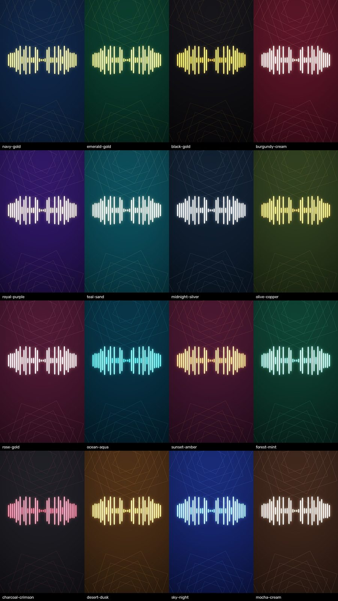

شنو يسوي؟
تسع مهارات، كل وحدة تنادي عليها بجملة عادية داخل المحادثة.
التفريغ بتوقيت الكلمة
يفرّغ الكلام العربي مع وقت كل كلمة، ويطلّع ملف ترجمة SRT وقائمة بالكلمات المشكوك فيها للمراجعة.
فرّغ الكلام بالتوقيتشدّ الإيقاع
يقص السكتات الطويلة وأصوات التردد (اااا، ممم) ويعيد توقيت التفريغ تلقائياً.
شيّل السكتات والااااصيد المقاطع
يرشّح أقوى المقاطع من المحاضرة الطويلة، تختار منها بقراءة النص، ويقصها جاهزة مع تفريغها.
طلّع لي ١٠ ريلات من المحاضرةقص عمودي يلحق الوجه
يحوّل الفيديو العرضي إلى 9:16 ويتبع المتكلم بهدوء، ويقدر يفصله عن الخلفية.
حوّله عمودي واتبع الشيخزوم على التأكيد
يلقط الكلمات اللي يشدّد عليها المتكلم ويحط عندها زوم ناعم يعطي الفيديو إيقاع.
حط زوم على التأكيدتنقية الصوت
يشيل الضجيج ويضبط الصوت على معيار السوشال (-14 LUFS) مع قياس قبل وبعد.
نقّي الصوتمن صوت إلى فيديو
تسجيل صوتي فقط يصير فيديو متحرك: ١٦ ثيم ألوان، ٦ مؤشرات تتحرك مع الصوت، ٣ خلفيات، و٤ مقاسات.
عندي صوت بس أبيه ريلالريل النهائي
كابشن عربي يلمع كلمة بكلمة، مع هوك واقتباس وقائمة وعدّاد وخاتمة، ووضع النص على اللقطات البعيدة.
سو الريل كامل بهويتيباقة النشر
٣ عناوين ووصف وهاشتاقات وفصول يوتيوب وتعليق مثبّت وغلاف، كلها من كلام المتكلم نفسه.
جهّز النشرالطريق من الملف للنشر
تستخدم المهارات كلها أو اللي تحتاجه منها بس.
١٦ ثيم ألوان
اختر ثيم جاهز أو حدد ألوانك بنفسك. الصورة تعرض كل الثيمات بمؤشر الأعمدة.

- المؤشرات: أعمدة · موجة · دائرة · حلقات · نقاط
- الخلفيات: تدرج · ألوان هادئة متحركة · لون سادة
- المقاسات: ريلز ٩:١٦ · انستقرام ٤:٥ · مربع · يوتيوب
- الزخرفة: نجوم هندسية مجردة تدور ببطء
- الكابشن والمشاهد ياخذون نفس ألوان الثيم تلقائياً
دليل التثبيت
خمس دقايق وتبدأ. البلقن يشتغل داخل Claude على الكمبيوتر أو الجوال.
- حمّل الملف: اضغط ملف البلقن (.plugin)، أو النسخة المضغوطة (.zip) إذا جهازك ما يقبل الأولى.
- ارفعه في Claude: افتح محادثة جديدة وأرفق الملف بالرسالة. تطلع لك بطاقة البلقن، اضغط تثبيت. أو من قسم الإضافات (Plugins) في Claude اختر إضافة بلقن من ملف.
- تأكد إنه انضاف: اكتب
/بالمحادثة وتشوف المهارات التسع باسمosama-religious-montage. - أرسل الفيديو أو الصوت وقل جملة عادية، مثلاً:
فرّغ الكلام بالتوقيتأوعندي صوت بس أبيه ريلأوطلّع لي ريلات من المحاضرة. - أول تشغيل بكل محادثة يجهّز الأدوات بنفسه، والموديلات تنزل أول مرة بس (دقيقة أو دقيقتين). بعدها كل شي أسرع.
- قل لـ Claude:
شغّل فحص البلقن— يشغّلdoctor.pyويقول لك شنو الناقص. - البلقن يحتاج يوصل لـ huggingface.co و github.com و pypi.org أول مرة (لتنزيل الموديلات).
- الفيديوهات الطويلة تاخذ وقت بالتصيير: الدقيقة تقريباً دقيقتين ونص.
قبل تنشر
- الآيات والأحاديث اللي يقولها المتكلم تطلع بالكابشن من التفريغ الآلي وما هي موثّقة — راجعها بعينك قبل النشر.
- العناوين والوصف تُستخرج من كلام المتكلم، ولا يُضاف عليه كلام ما قاله.
- الخلفيات زخرفة ومؤشرات صوت فقط، بدون صور ذوات أرواح.
- حقوق المقطع على صاحبه: إذا المحاضرة مو لك، خذ الإذن قبل ما تنشرها.